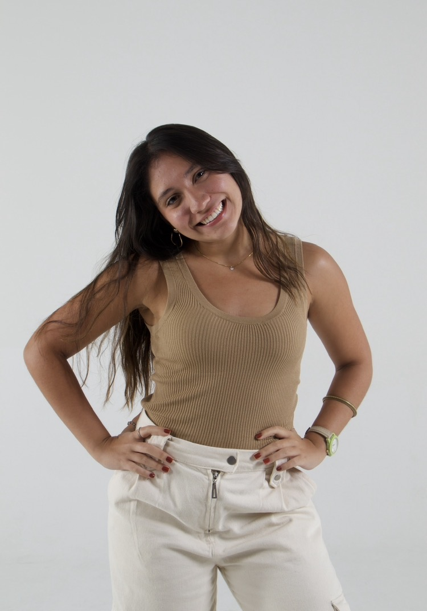
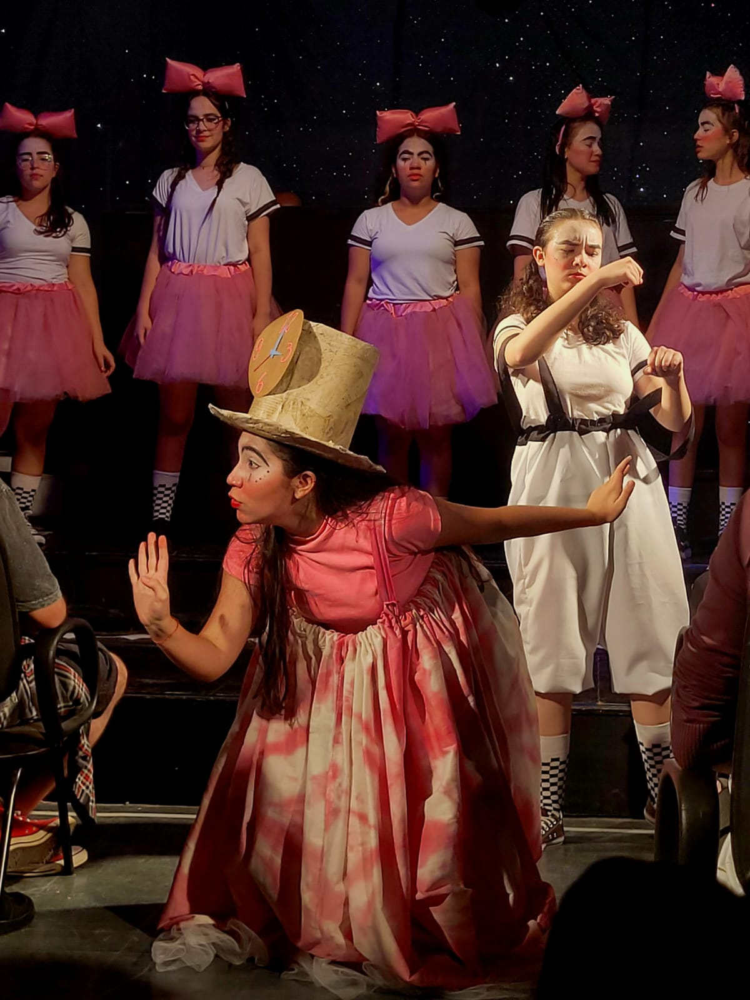
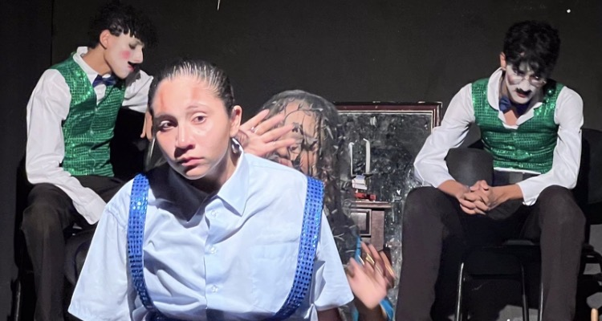
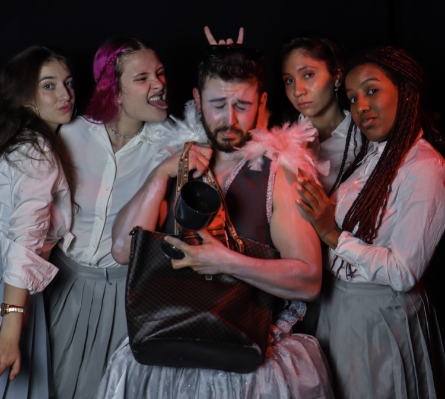
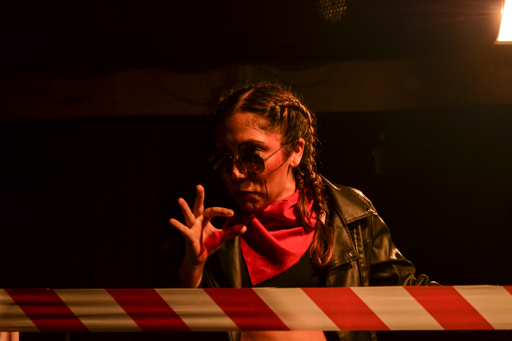
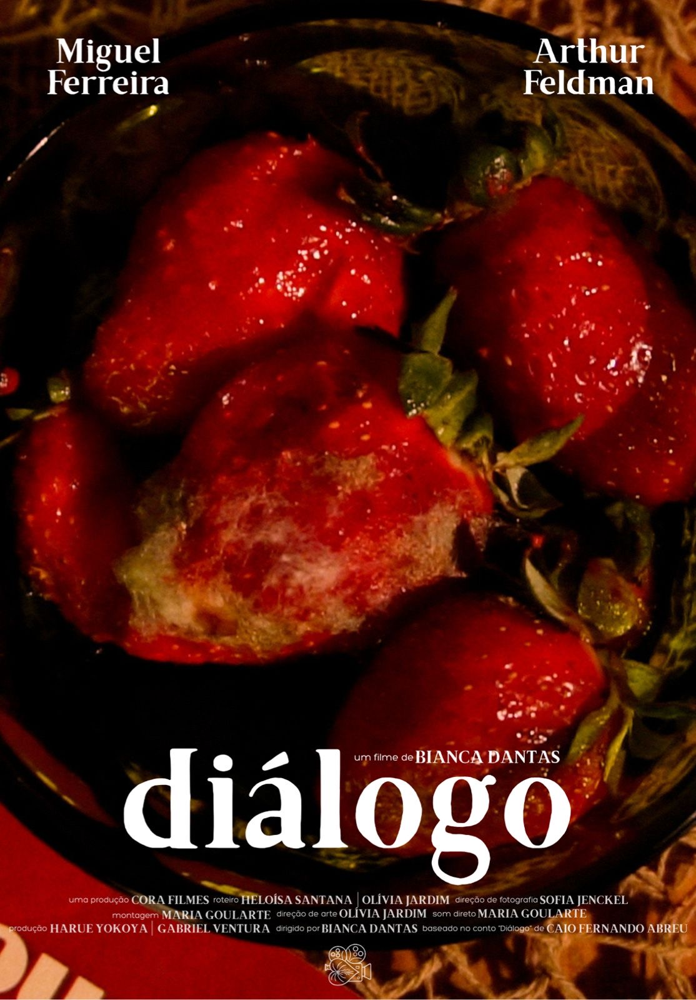
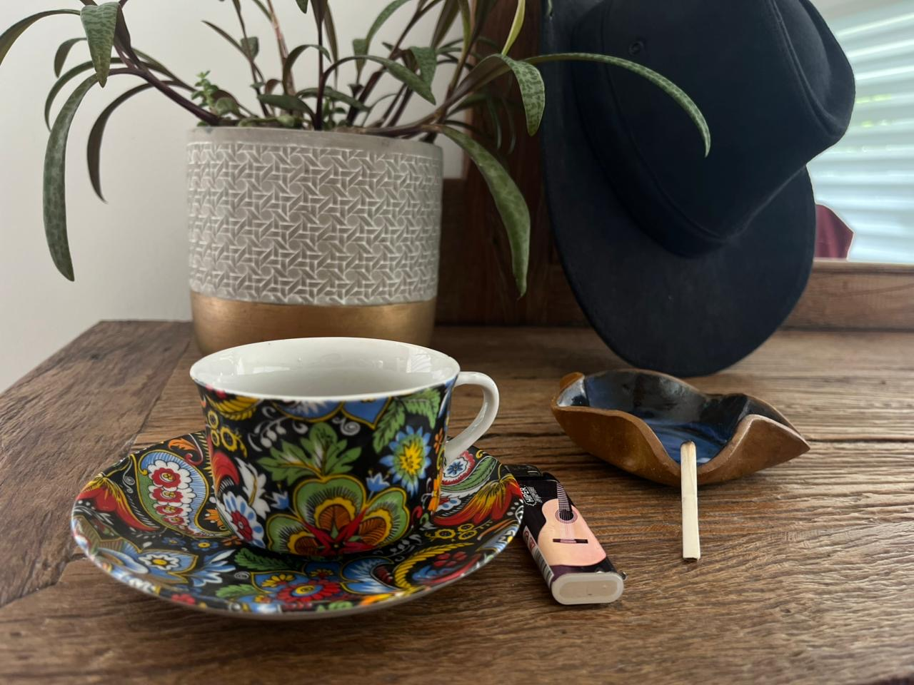
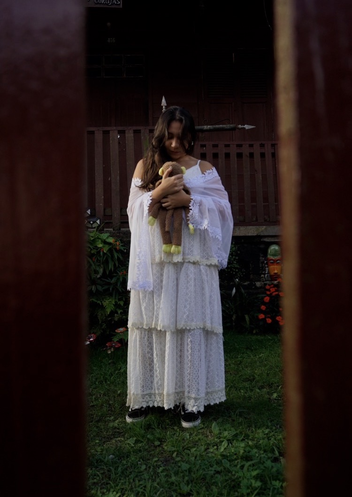

Explorando visões de mundo através das lentes do cinema e da intensidade dos palcos. Uma intersecção estética vibrante e autêntica inspirada nos anos 70.

Criativa e autêntica, Olivia sempre teve a Música, Teatro e Cinema como grandes paixões. Imersa em anos de atuação em variadas instituições, como a Escola Municipal de Artes Maestro Fêgo Camargo, o Célia Helena Centro de Artes e Educação e a Escola de Atores Wolf Maya, descobriu sua visceral necessidade de fazer arte.
Com o claro objetivo de se especializar no universo cinematográfico, a fim de atingir um maior público com suas visões de mundo expressivas e singulares, atualmente gradua-se em Cinema e Audiovisual pela ESPM.
Uma seleção de trabalhos transitando pela atuação teatral, direção de arte, roteiro e produção audiovisual.

Atuação marcante interpretando a personagem “Diário”.

Performance teatral com atuação caracterizada como o personagem “Campônio”.

Trabalho de expressão dramática profunda no papel da personagem “Isadora”.

Adaptação da célebre obra teatral, contando com atuação imersiva enquanto o papel de “O Capitalista”.

Atuação multifacetada nos bastidores do audiovisual como Roteirista e Diretora de Arte do projeto.

Desenvolvimento e ensaio fotográfico conceitual inteiramente inspirado no poema “Café Com Leite”.

Produção musical e audiovisual completa, atuando como Produtora e também como Atriz da obra.
Vamos criar algo incrível juntos? Sinta-se à vontade para acompanhar meus projetos ou iniciar uma colaboração.
Disponível para projetos cinematográficos, curtas, peças teatrais, direção de arte e roteiros.